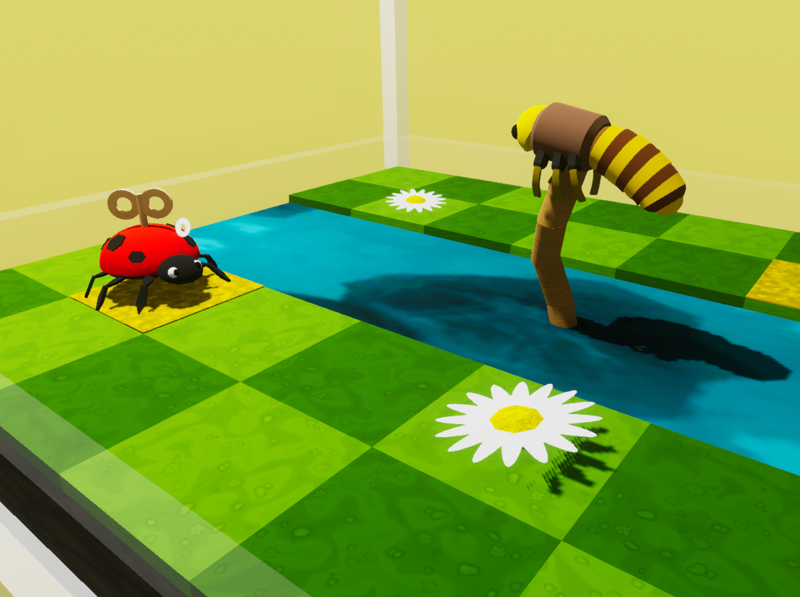

Bot is sus is a puzzle game for introducing coding to students, putting three dimensions on the old movement programmer education games. The goal was to create an educational game for the Blocksmith platform that would be playable on web and mobile devices. I worked with my colleague and boss Markus Nigrin throughout the project. Its development spanned the course of about 21 months, going through several iterations before landing on the final version.

The game started out as "MoveBot," a yellow cube with four directional buttons and a go button. It had some code written originally by Markus to read strings and output a command. It was a great starting point.

Naturally, the next step was to make a maze for the bot to solve. Actually solving it was pretty cumbersome and unfun, having to put in 20 or so total commands to solve the maze.

I switched the robot to a drone and gave it the ability to fly up or down. I envisioned the game as a platformer, where the drone/robot would assist the player in traversing levels and solving puzzles with its variety of tools. Among the tools I made for it were a missile launcher, platform placer, and lazerbeam shield.
The first prototype of the game was a handful of levels in a "Portal" theme. This early version was complex. The drone could move in any direction or even return back to the player. I made a save system which allowed the player to save a string of commands in case they wanted to use it in a later level. By contrast however, the levels themselves weren't complicated. I cut down many features in favor of simplicity.
In the next version the player would be helping the robot get to a goal, instead of the other way around.
Our target audience was K-12 students, so a good child-friendly theme was needed. We came up with a character named Lisa, a ladybug who finds herself trapped in a lab and needs the player's help to navigate her way out. She could eat berries which allowed her to fly up or down.
One major element that I added was the help of friends. Wyatt appears, a worm who can eat dirt blocks to clear the path or uncover berries. Another friend is Bono, a butterfly who can shield Lisa from dripping water with his wings.
By allocating unique abilities to two or more characters navigating the levels became more interesting.

The code was becoming robust by this time. It needed hit detection and bumpers to avoid walking through walls, among other tweaks like rounding off movement and goal detection.
After letting the project sit for a while Markus got the opportunity to submit the game to hourofcode.org, just before hour of code
day on December 12th, 2021. He did some research on the keyword trends and suggested we re-theme the game to include "sus" somewhere in
the title. We came up with "Bot is sus?" and a character who is accused by her crew and needs to escape the ship by
climbing into vents.
I still think the ladybug idea had leverage, but susbot did serve us well capturing attention through the title and
thumbnail; together they have a great hook and an obvious reference to "Among Us," a game already popular with our target
audience at the time.

We kept gameplay simple, introducing a few buttons at a time in easy levels to ease the player in. Later levels become more complex involving Wyatt, a laser shield robot.

I solved several major bugs and issues that came up during testing. Among them were lag, smoothing out the robot's movement, and movement overshooting which happened sometimes on certain devices. I optimized the game to play smoothly on iPads and Chromebooks which are common in classrooms. My colleague Colin Falconer tested the game on a variety of platforms and was a great help!

A chunk of the code on the robot controller. Fun fact: there is a hidden feature in the game which allows the player to code with loops.


I was quite proud of the duck cosmetic; I named him Bernard. He makes a quack sound occasionally and is the most expensive hat. There are also headphones which emit music note particles.
Fun and games aside, this was one of the more rewarding and successful projects that I finished. I learned about simplicity and about trying different
directions. I got to interpret data and implement a changes through statistics.
If I had more time to work on the project (or got the opportunity to make a Bot is sus 2) there are several things I would add. One of them
being a security camera that can see several squares of the level. Should the bot step on a square that the security camera can see, several lasers
are turned on. The player would strategize when and where to turn on the lasers in order to pass through. I would also add some physics based element,
like crates that the bot must push into the right places to pass through, similar to slide puzzles.